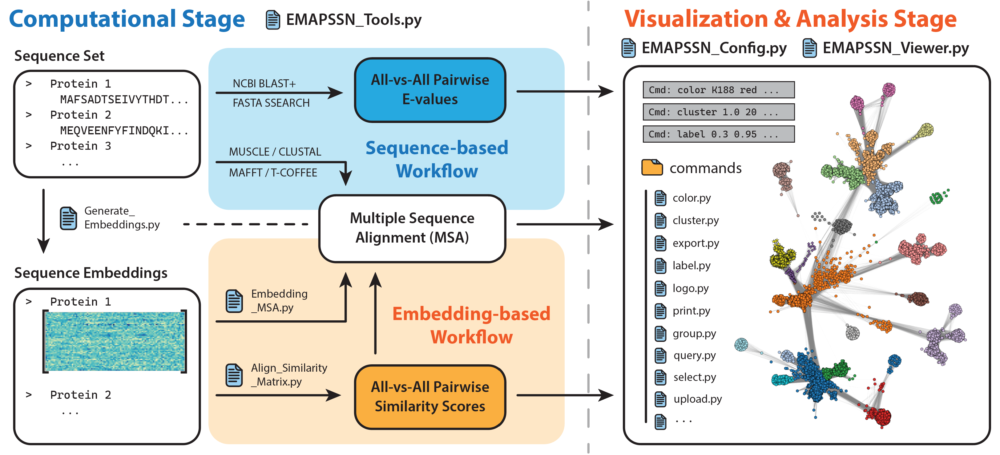
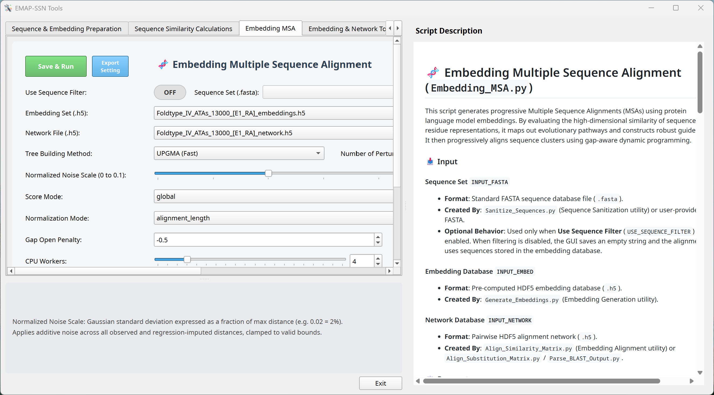
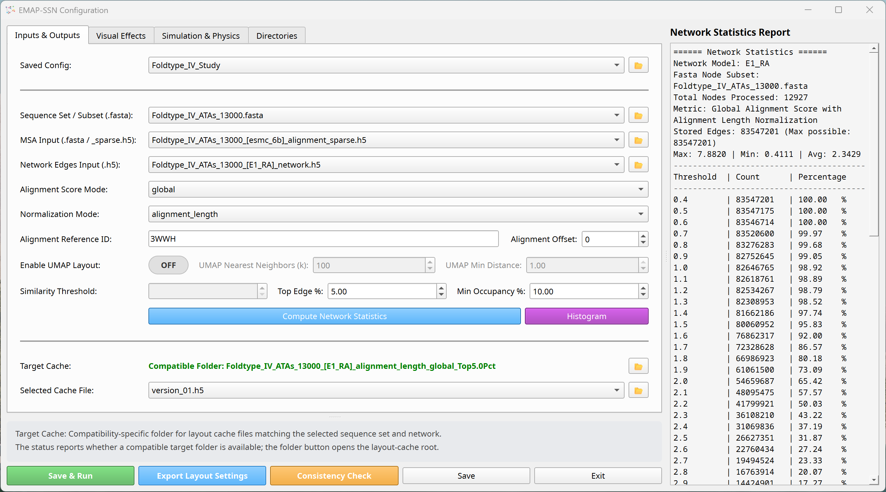
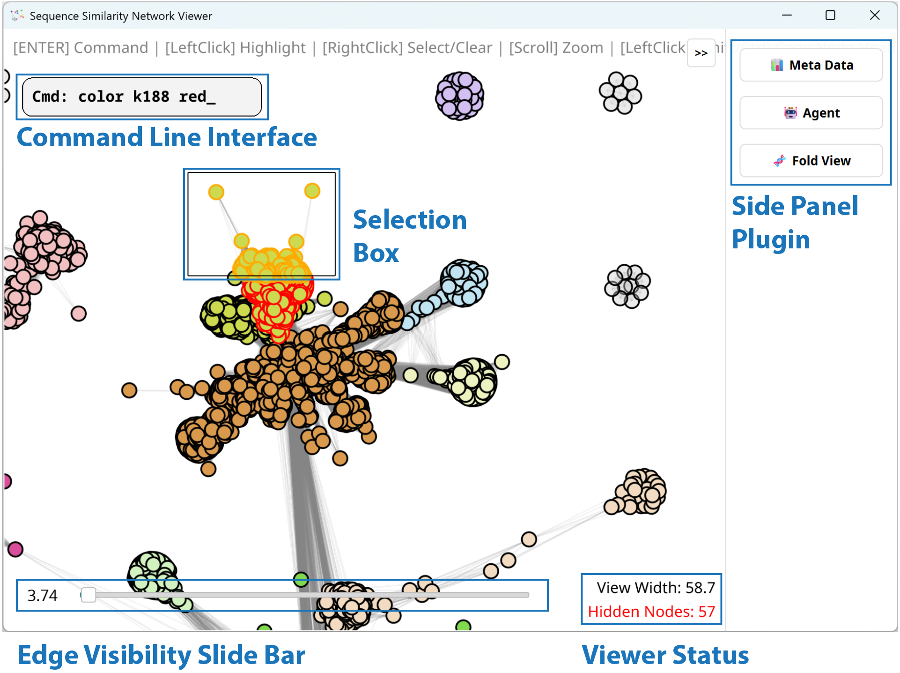

EMAP-SSN Quick Start Manual
Comprehensive Guide: Workflow & GUI SuiteA comprehensive primer on the Embedding- and Multiple-Alignment-integrated Protein Sequence Similarity Network (EMAP-SSN) platform. This manual connects the overarching computational pipeline with the visual graphical user interfaces (GUIs), guiding you from raw sequence databases to interactive 3D multi-scale network analysis.
This manual covers high-level pipeline logic, GUI architectures, and end-to-end user workflows. For exhaustive parameter references of individual standalone command-line scripts, see the markdown files in src/tools/tool_descriptions/. For complete syntax and parameter documentation of interactive console HUD commands, consult the Viewer Command Reference.
Sequence Similarity Networks (SSNs) are indispensable tools in modern computational biology and protein biochemistry. By transforming all-versus-all sequence comparison scores into graph topologies, SSNs partition large, diverse protein superfamilies into distinct isofunctional clusters, revealing evolutionary trajectories, enzymatic promiscuity, and divergent subfamilies.
However, traditional SSNs present two fundamental limitations:
- The Twilight Zone Barrier: Conventional pairwise alignment methods (e.g., BLAST bit scores, Smith-Waterman identities) fail when sequence identities drop below 20–30%, obscuring remote structural homologs and deorphanized natural enzymes.
- The Multi-Scale Disconnect: Traditional network viewers render macroscopic clusters as abstract spheres or graph nodes without direct, continuous coupling to the underlying Multiple Sequence Alignment (MSA) or 3D atomic structures. An analyst observing a divergent cluster has historically had to manually cross-reference external alignment editors to identify which specific catalytic or specificity-determining residues dictate cluster divergence.
EMAP-SSN overcomes both hurdles by introducing:
🧠 Protein Language Model (pLM) Embeddings
Leverages state-of-the-art representations (ESM-2, ProtBERT, ProstT5, Ankh) to align sequences using dense embedding similarity matrices rather than static amino acid substitution tables (BLOSUM62/PAM250), capturing deep structural and evolutionary relationships in the twilight zone.
🔬 Native MSA & Structural Integration
Directly maps MSA residue conservation onto the 3D network nodes. Commands like color K188 red or logo selected project microscopic chemical features directly into macroscopic 3D network space in real time, reinforced by integrated Mol* 3D macromolecular structures.
The EMAP-SSN pipeline consists of two overarching stages: the Computational Stage (executed via EMAPSSN_Tools.py or headless CLI scripts) and the Visualization & Analysis Stage (orchestrated by EMAPSSN_Config.py and visualized in EMAPSSN_Viewer.py).

| Workflow Dimension | Traditional Sequence-Based Path (Blue) | Modern Embedding-Based Path (Orange) |
|---|---|---|
| Initial Preparation | Raw FASTA sanitized with Sanitize_Sequences.py to normalize headers and enforce length boundaries. |
Raw FASTA sanitized with Sanitize_Sequences.py, ensuring clean input for neural network tokenizers. |
| Representation | Discrete character amino acid alphabet (20 natural amino acids). | High-dimensional dense vector representations computed via Generate_Embeddings.py (e.g. ESM-2 650M/3B, ProtBERT). |
| Pairwise Similarity | BLAST+ (blastp) or FASTA (ssearch36) yielding E-values and bit scores. Stored as HDF5 matrix in Networks_EValues/. |
Dynamic programming alignment over residue embedding similarities (Embedding_Pairwise_Alignment.py) or full-vector cosine metrics. Stored in Networks_EValues/. |
| MSA Generation | External aligners: MUSCLE, Clustal Omega, MAFFT, or T-Coffee. Resulting FASTA placed in Multiple_Alignments/. |
Evolutionary guide-tree construction directly from embedding similarity/distance matrices (Embedding_MSA.py) followed by progressive profile alignment. |
| Sensitivity Boundary | Optimal for sequence identities > 30–40%. Fast and universally benchmarked. | Succeeds in the "twilight zone" (< 25% identity); sensitive to structural homology and active site conformation. |
Layout Generation & Manifold Topologies
Regardless of whether pairwise scores originate from BLAST E-values or pLM embedding alignments, the pairwise similarity matrix can be solved into spatial coordinates through two distinct mathematical engines:
- 3D Force-Directed Simulation (Spring-Electrical Physics): Treats nodes as charged particles repelling each other (Coulomb repulsion) and pairwise similarity scores as spring tensions pulling homologous proteins together (Hooke's attraction). This creates an organic, biologically intuitive 3D cluster topology where physical distances reflect evolutionary relationships.
- 2D UMAP Non-Linear Manifold Projection: Applies Uniform Manifold Approximation and Projection (UMAP) directly onto pairwise distance matrices or embedding vectors. Constructs a $k$-nearest-neighbor Riemannian graph, preserving both local cluster micro-structure and global family geometry on a 2D plane.
The Tools GUI is the centralized graphical workbench for running all data preparation, embedding calculations, sequence similarity alignments, network edge filterings, and MSA constructions.

1. Pipeline Stage Tabs
The Tools GUI categorizes 14 computational programs into clear operational tabs:
-
Sequence & Embedding Preparation: Contains
Sanitize_Sequences.py(cleaning sequence databases, enforcing length thresholds, stripping fragment keywords, deduplicating) andGenerate_Embeddings.py(extracting per-residue and mean-pooled representations from models such as ESM-2, ProtBERT, ProstT5, and Ankh). -
Sequence Similarity Calculations: Hosts traditional pairwise alignment (BLAST/Smith-Waterman),
Embedding_Pairwise_Alignment.py(dynamic programming alignment across embedding token dimensions), andEmbedding_Cosine_Similarity.py(rapid matrix multiplication over sequence-level pooled representations). -
Embedding MSA: Programs for constructing progressive Multiple Sequence Alignments guided by embedding evolutionary distance trees (
Guide_Tree_MSA.py,Sparse_Guide_Tree_MSA.py, andMerge_Guide_Tree_MSA.py). -
Embedding & Network Tools: Utilities for thresholding edge matrices (
Filter_Similarity_Network.py), filtering embedding representations (Filter_Embedding_Matrix.py), and merging distributed HDF5 databases (Combine_Network_Files.py). -
Others: Sequence and embedding extraction utilities (
Extract_Sequences.py,Extract_Embedding.py) and custom metadata injection (Inject_Metadata.py) for embedding external annotations directly into HDF5 networks. - Directories: Master path manager defining base directories for FASTA inputs, network outputs, embeddings, layout caches, and analysis results.
2. Controls, Tooltips, and Parameter Validation
Input fields in the Tools GUI are context-aware:
- Reactive Dropdowns: Automatically scan their respective target directories (e.g.,
Input_Files/Sequence_Sets/for FASTA files, orEmbeddings/for HDF5 files) and populate valid options dynamically. - Dynamic Parameter Tooltips: Hovering your mouse over or clicking into any parameter field instantly updates the status bar at the bottom-left with a concise explanation of the parameter's meaning, expected units, and recommended default range.
3. "Save & Run" vs. "Export Setting" (HPC & Headless Reproduction)
Every tool card features two primary action buttons:
-
Save & Run (Green Button): Validates input fields, persists settings into
tools_settings.json, and launches the computational script in an isolated terminal or background process, displaying live standard output and progress bars. -
Export Setting (Blue Button): Serializes the exact current configuration into an independent, minimal JSON file saved in
Cache_Files/Tool_Settings/. This decoupled file contains only the parameters and directories necessary for that single tool.
# Linux / macOS HPC Node:
./.venv/bin/python src/tools/Generate_Embeddings.py Cache_Files/Tool_Settings/my_run.json
# Windows:
.\.venv\Scripts\python.exe src\tools\Generate_Embeddings.py Cache_Files\Tool_Settings\my_run.jsonThe Configuration GUI acts as the central control bridge between the raw computational datasets (HDF5 networks, FASTA sequences, MSA alignments) and the 3D interactive Viewer. Here, you define file bindings, select layout engines, tune physics parameters, and perform vital pre-flight data integrity checks.

1. Inputs & Outputs Tab
- Saved Config Profile: Switch between
(custom)(saved inviewer_settings.json),(default)(read-only built-in baseline), or create named project profiles like(new)stored underCache_Files/Saved_Config/. - Sequence Set / Subset (.fasta): Selects the protein sequences corresponding to the network nodes.
- MSA Input (.fasta / _sparse.h5): Binds the multiple sequence alignment used for residue conservation mapping and sequence logos.
- Network Edges Input (.h5): Binds the all-vs-all pairwise similarity or E-value matrix.
- Alignment Score & Normalization Modes: Specifies score interpretation (
globalvs.local) and score normalization (e.g.,alignment_length,shorter_sequence, or raw score). - Alignment Reference ID & Offset: Selects a specific protein sequence header in the MSA to serve as the global coordinate anchor. Numbering across all residue commands (e.g.,
color K188 red) will align 1:1 with this reference protein's native residue coordinates! - Enable UMAP Layout: When toggled ON, switches the solver from 3D force-directed physics to 2D UMAP non-linear manifold projection, with tunable
UMAP Nearest Neighbors (k)andUMAP Min Distance. - Similarity Threshold & Top Edge %: Prunes edges below a given similarity score or keeps only the top $X\%$ strongest edges across the entire network to eliminate topological noise.
- Target Cache & Selected Cache File: Automatically scans for pre-computed layout coordinates in
Cache_Files/Saved_Layouts/. If found, the Viewer loads the pre-existing 3D layout instantly without recomputing the layout physics! Selecting(New Layout Cache)initiates a fresh simulation.
2. Diagnostic Utilities: Pre-Flight Integrity & Cutoff Optimization
📊 Compute Network Statistics
Clicking Compute Network Statistics processes the network edge distribution and generates the comprehensive report in the right panel:
- Reports Total Nodes, Stored Edges, Max/Min/Mean scores.
- Prints a percentile table showing edge counts at various score cutoffs.
- Why it matters: Prevents launching a simulation with a "giant hairball" network (too dense) or completely disconnected singletons (too sparse).
🔍 Consistency Check
Clicking the yellow Consistency Check button performs a strict pre-flight validation:
- Cross-checks sequence headers and record counts across the Network HDF5, FASTA sequence set, and MSA file.
- Verifies that sequence identifiers match exactly.
- Why it matters: Prevents catastrophic index out-of-bounds errors or incorrect residue mapping inside the Viewer before simulation begins!
3. Simulation & Physics Tab
When utilizing the 3D Force-Directed Layout, this tab configures the physical simulation solver:
| Parameter | Default | Scientific Description & Tuning Impact |
|---|---|---|
Spring K |
5.0 | Hooke's law attraction stiffness between connected nodes. Higher values pull homologous proteins tighter into compact clusters. |
Coulomb K |
10.0 | Electrostatic repulsion constant. Pushes unrelated nodes apart, expanding distinct clusters into visible open space. |
Coulomb Cutoff |
30.0 | Spatial cutoff radius for repulsion forces. Nodes further apart than this distance do not compute repulsive interactions, drastically accelerating performance for large graphs. |
Damping |
0.9 | Velocity attenuation factor (0.0 to 1.0). Absorbs kinetic energy to prevent perpetual orbital oscillation and achieve steady convergence. |
Max Force Limit |
20.0 | Clamps runaway explosive forces during early iterations when random starting coordinates place nodes in extreme proximity. |
Time Step (DT) |
0.005 | Integration step size for Verlet/Euler velocity updates. Lower values increase numerical stability; higher values speed up convergence. |
RMSD Threshold |
0.005 | Convergence criterion. When the Root-Mean-Square Deviation of node coordinates over a sliding window drops below this value, the simulation halts automatically. |
Cluster Packing Geometry |
Square | Spatial packing geometry (Square, Circle, Hexagonal) used to organize disconnected components on the outer canvas perimeter. |
4. Visual Effects & Directories Tabs
- Visual Effects: Sets default node sizes, edge widths, edge alpha transparency, label font sizes, and default colors (Initial node, hover, connected edges). Includes Low Resource Mode toggle for ultra-smooth rendering on hardware with limited GPU VRAM.
- Directories: Configures filesystem base paths. Supports portable directory aliases like
$input_file$,$cache_file$, and$analysis_result$so configurations can be shared across different computers seamlessly.
The Viewer GUI is the flagship interactive visualization application of EMAP-SSN. Built upon PySide6 and the VisPy high-performance OpenGL graphics engine, it renders tens of thousands of nodes and edges in real time with buttery 3D camera navigation, dynamic edge filtering, spatial cluster manipulation, and an integrated analytical command console.

1. 3D OpenGL Canvas & Camera Navigation
The main viewport provides an immersive 3D pan-zoom-rotate space:
| Action | Mouse / Keyboard Binding | Description |
|---|---|---|
| 3D Rotation | Left-Click + Drag on empty canvas | Orbits the camera smoothly around the 3D network centroid. |
| Pan / Translate | Right-Click + Drag (or Shift + Left-Click Drag) | Translates the camera laterally across the current view plane. |
| Zoom | Mouse Scroll Wheel or Trackpad Pinch | Zooms in and out continuously centered around the cursor position. |
| Highlight Node | Left-Click on a node | Highlights the node, displays its sequence header and metadata in the HUD, and highlights its direct topological neighbors. |
| Toggle Selection | Right-Click on a node | Toggles the selection state of individual nodes. Right-clicking empty space clears current selection. |
| Box / Area Selection | Shift + Left-Click Drag | Draws a visible rectangular Selection Box (as seen in Figure 4) to capture all enclosed nodes into the active cohort. |
| Spatial Cluster Dragging | Ctrl + Left-Click Drag on selected nodes | Physically translates selected nodes across 3D space to cleanly separate overlapping clusters for publication figures! Full Undo/Redo is supported via Ctrl+Z. |
2. Real-Time Edge Visibility Slide Bar
Located at the bottom-left of the viewport (Figure 4), the Edge Visibility Slide Bar enables instant topological filtering:
- Dragging the slider dynamically increases or decreases the active similarity score cutoff (or E-value threshold).
- Edges below the active slider threshold instantly disappear from the screen without requiring you to re-run the layout simulation!
- As the threshold rises, interconnected super-clusters progressively fragment into distinct, specialized sub-clusters, revealing fine-grained evolutionary divergence.
3. Heads-Up Display (HUD) Command Console
Pressing Enter or / opens the interactive in-line command prompt in the upper-left corner:
- Instant Analytical Control: Type commands to color nodes, calculate Leiden/Louvain clusters, compute residue conservation logos, inspect properties, or export cohorts.
- Layout-Bound Persistent History: Press Up and Down arrow keys to cycle through past commands. Command history is automatically saved per layout in
Cache_Files/Saved_Layouts/<layout>/cli_history.txt! - Auto-Completion & Error Feedback: Invalid command syntax displays helpful hints directly beneath the command bar.
color, cluster, logo, select, label, structure, and print.
4. Side Panel Plugins & Embedded Web Utilities
Located in the top-right corner of the Viewer (Figure 4), the side panel provides expandable web-based analytical tools:
📊 Meta Data Explorer (Tabulator)
Clicking Meta Data launches an interactive, searchable spreadsheet displaying all node annotations, organism taxonomy, EC numbers, and custom metadata. Features two-way live selection sync: selecting rows in the table instantly selects those nodes in the 3D network, and vice-versa!
🤖 AI Agent Assistant
Clicking Agent opens an embedded conversational AI assistant. You can ask high-level questions (e.g. "Which cluster has the highest conservation of Catalytic Aspartate?") or instruct the agent to run complex multi-step formatting commands automatically.
🧬 Fold View: Integrated Mol* 3D Macromolecular Structure Viewer
Clicking Fold View launches an embedded Mol* structure visualizer directly inside EMAP-SSN. When a node is selected, Fold View retrieves its predicted AlphaFold/ESMFold coordinate model or experimental PDB structure. Residue-level selections in the network (e.g., MSA conservation columns or catalytic motifs) highlight synchronously on the 3D atomic protein structure, completing the bridge from macroscopic network to atomic mechanism!
5. Viewer Status Stack
The bottom-right corner displays real-time telemetry:
- View Width: Current camera field-of-view dimension in world coordinates.
- Hidden Nodes: Count of nodes currently hidden by selection filters or subnet commands.
- Active Metadata: Displays the attribute currently mapped to the node coloring spectrum.
- Background Job Monitor: Displays a progress indicator whenever asynchronous calculations (e.g., sequence logo generation or structure downloading) are executing in the background.
Follow this 5-step tutorial to create, simulate, and analyze your first embedding-based Sequence Similarity Network from scratch.
Step 1: Ingest & Sanitize Your Protein Sequences
Place your target protein FASTA file (e.g., kinase_family.fasta) into the Input_Files/Sequence_Sets/ directory.
Launch EMAP-SSN Tools (via shortcut or python src/EMAPSSN_Tools.py). On the Sequence & Embedding Preparation tab, select kinase_family.fasta. Enable Length Filter with a minimum length of 150 and maximum of 1000 amino acids to remove incomplete fragments. Click Save & Run.
kinase_family_sanitized.fasta with normalized headers and standard residue alphabets.
Step 2: Generate Protein Language Model Embeddings
Still in the Sequence & Embedding Preparation tab, navigate to Generate Embeddings. Select kinase_family_sanitized.fasta as the input FASTA.
Select your desired model, such as esm2_t33_650M_UR50D (standard high-accuracy ESM-2 representation). Verify that GPU acceleration is enabled. Click Save & Run.
kinase_family_embeddings.h5) is written to Embeddings/ containing high-dimensional per-residue and sequence-pooled embedding vectors.
Step 3: Calculate Pairwise Similarity & Guide-Tree MSA
Switch to the Sequence Similarity Calculations tab. Run Embedding Pairwise Alignment (or Pairwise Alignment for traditional BLAST). Set Score Mode to global and Normalization to alignment_length. Click Save & Run to compute the all-vs-all similarity matrix.
Next, switch to the Embedding MSA tab and run Guide Tree MSA (Embedding_MSA.py). This builds an evolutionary guide-tree directly from embedding distances and aligns the sequences into a global MSA.
Input_Files/Networks_EValues/ and an integrated MSA file in Input_Files/Multiple_Alignments/.
Step 4: Configure Network & Execute Layout Simulation
Launch the Configuration GUI (python src/EMAPSSN_Config.py).
- Select your Sequence Set, Network Edges H5, and MSA Input in the dropdowns.
- Click the blue Compute Network Statistics button. Review the report in the right panel to choose an appropriate
Top Edge %(e.g., 5.0% or 10.0%) to prevent excessive edge clutter. - Set your
Alignment Reference IDto a known reference protein (e.g., a crystallized family archetype). - Click the yellow Consistency Check button to confirm that sequence counts and headers match 100%.
- Click Save & Run to start the force-directed physics layout solver and open the Viewer!
Step 5: Interactive Exploration, Annotation & Export in the Viewer
With the 3D Viewer open, explore and dissect your protein family:
- Cluster Partitioning: Drag the Edge Visibility slider at the bottom-left to isolate subfamilies. Press Enter and type:
This partitions the network into modular clusters using the Louvain/Leiden algorithm.cluster 1.0 15 - Residue Conservation Mapping: Color the network by conservation of a critical active site residue (e.g. Lysine 188 in the reference protein):
Nodes with conserved Lysine 188 highlight in vibrant red, while substitutions fade to neutral grey.color K188 red - Generate Sequence Logo: Select an interesting cluster with Shift+Drag and run:
A high-resolution WebLogo sequence motif graphic is generated for that specific subfamily!logo selected - Inspect 3D Atomic Structure: Click any representative node, then click the Fold View button on the top-right side panel to inspect its 3D atomic structure in Mol*.
- Publication Figure Export: Save a publication-grade high-resolution image:
print 600
EMAP-SSN features an automated compute hardware detector that discovers available accelerators and validates them via real tensor operations:
- NVIDIA GPUs: Highly recommended. Supports CUDA 13.2 and CUDA 12.6 profiles with full PyTorch acceleration for both embedding generation and physics layout solvers.
- AMD GPUs: Supported via ROCm 7.14 / 7.2.1 on Windows 11 and Ubuntu Linux.
- Intel Arc / Core Ultra: Supported via Intel XPU on Windows 11 and Ubuntu Linux.
- Apple Silicon (M1/M2/M3/M4): Supported natively via Metal Performance Shaders (MPS) on macOS 14+.
- CPU Fallback: If no accelerator passes tensor validation, the application automatically falls back to multi-threaded CPU execution safely.
1. Long Path Support: Deep file paths containing predicted structures or long sequence headers can exceed the traditional Windows 260-character limit. Run the following command in an Administrator PowerShell once and reboot:
New-ItemProperty -Path "HKLM:\SYSTEM\CurrentControlSet\Control\FileSystem" -Name "LongPathsEnabled" -Value 1 -PropertyType DWORD -Force2. Developer Mode: Enabling "Developer Mode" in Windows Settings allows the Hugging Face model cache to create symbolic links without administrative elevation, preventing model weights from consuming duplicate disk space.
Network Density Tuning: Avoiding the "Hairball" Effect
A common mistake among first-time SSN users is retaining too many low-confidence edges, resulting in an unreadable "giant hairball" where all nodes collapse into a single amorphous cloud.
- Always use the Compute Network Statistics report in the Configuration GUI.
- Aim for an average node degree between 10 and 50 edges per node.
- For large networks (>10,000 nodes), restrict edges to the top 1.0% – 5.0% of similarity scores using
Top Edge %. - Remember that the Edge Visibility Slide Bar in the Viewer can always dynamically filter edges further at runtime!
📖 Interactive Viewer Command Reference
Ready to master the HUD console? Read the complete command encyclopedia covering syntax, flags, and examples for all 50+ viewer operations:
Open list_of_commands.html →📜 Standalone Script Documentation
Need exact mathematical derivations, CLI arguments, or HDF5 dataset schemas for individual scripts? Browse the markdown guides in:
src/tools/tool_descriptions/
🔌 MCP Server & Headless Pipeline
Integrating EMAP-SSN with LLM agents (Claude, Codex, Antigravity) via Model Context Protocol? Read:
docs/mcp_settings.md
🧩 Web Plugin Development
Want to build custom side-panel plugins or embedded web utilities for the 3D Viewer? Consult:
docs/web_plugin_development.md